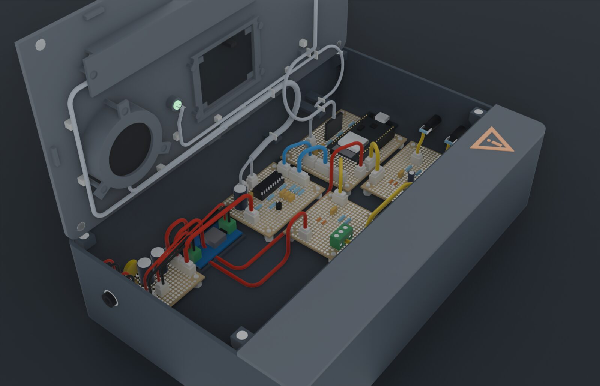
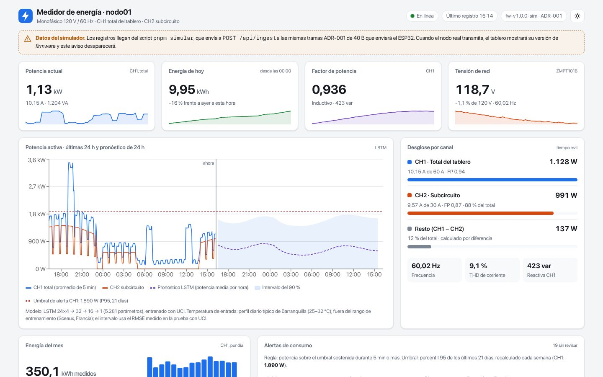
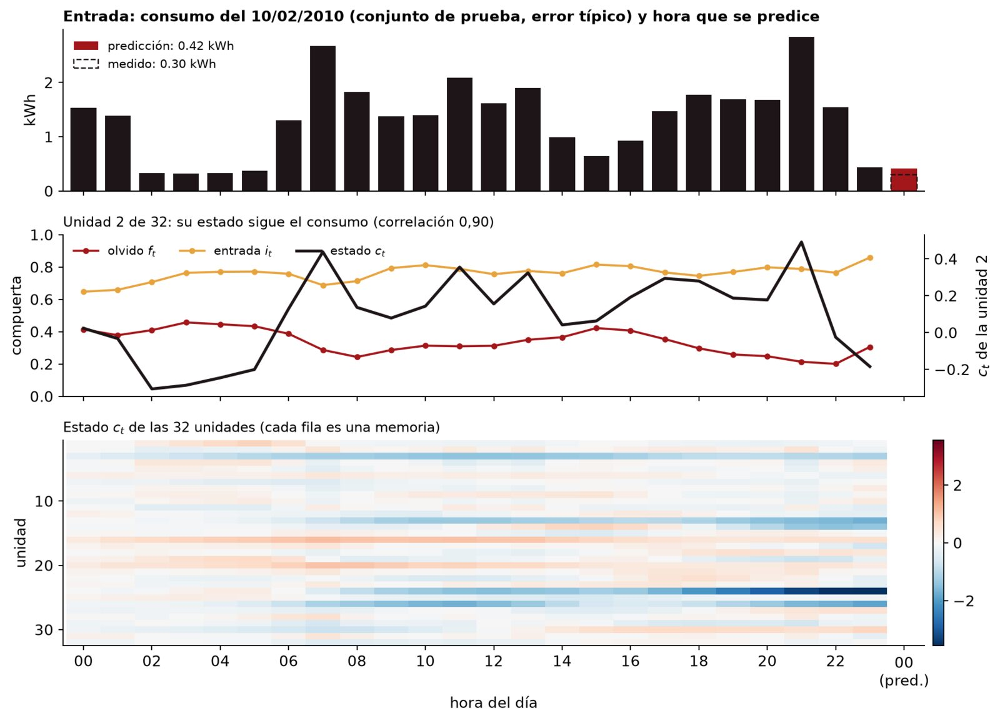

Medidor de energía no invasivo con ESP32
Un medidor monofásico de 120 V / 60 Hz con dos canales de corriente y un canal de tensión aislado. Mide el tablero completo y un subcircuito, como el del aire acondicionado, y publica los datos por Wi-Fi cada segundo.

La factura llega tarde y no dice qué equipo gastó
La factura muestra un solo número al mes. Tiene tres limitaciones:
- Resolución de un mes. No muestra los ciclos diario y semanal, que son los que dominan en un clima sin estaciones.
- Un solo total. No distingue qué circuito o equipo produjo el consumo.
- Hasta 30 días de retraso. Una medida de ahorro no se puede comprobar hasta el siguiente ciclo de facturación.
En la región Caribe la demanda sigue creciendo y, en los edificios comerciales, el aire acondicionado representa en promedio cerca de la mitad del consumo.
Pregunta del proyecto: ¿cómo medir, con un microcontrolador de bajo costo y sin intervenir la instalación, el consumo por circuito y casi en tiempo real, de forma segura y con un error conocido?
Del cable a tu celular
- Pinzas SCT-013-000. Abrazan el conductor de fase sin abrirlo. La corriente crea un campo magnético que la pinza convierte en una corriente pequeña.
- ZMPT101B. Un transformador aislado reduce los 120 V a una señal segura. La red queda en un compartimento separado.
- Acondicionamiento. Resistencia de carga, polarización a media escala, filtro antialias y protección llevan cada señal al rango del ADC.
- ESP32. El ADC1 toma 8.000 muestras por segundo de cada señal y calcula sobre ventanas de 60 ciclos de red (≈ 1 s).
- Wi-Fi. Envía un registro por ventana en lotes cada 5 s; si se cae la red guarda hasta 1.200 registros (20 min).
- Plataforma web. Guarda la serie, la muestra en un tablero y la usa para pronosticar el consumo.

Multiplicar, sumar, promediar
Con muestras tomadas sobre un número entero de ciclos, los valores eficaces y la potencia activa son sumas:
- La ventana empieza y termina en cruces por cero de la tensión, así siempre contiene ciclos completos.
- Se resta la media de la propia ventana, por eso no hace falta conocer con exactitud la polarización.
- Como el ADC convierte V, I1 e I2 en secuencia, la tensión se interpola al instante de cada corriente (corrección de −8° a +11°).
- La distorsión armónica (THD) de CH1 se calcula con el algoritmo de Goertzel hasta el armónico 40.
Tarjetas modulares y red aislada
El gabinete de 280 × 180 × 70 mm se imprime en 3D. La tapa cierra con imanes; no lleva tornillos de ensamble ni pegante. Dentro hay cinco tarjetas perforadas de baja tensión:
| Tarjeta | Función |
|---|---|
| T1 Potencia | Protección de entrada y 12 V / 5 V (LM2596) |
| T2 Corriente | Dos canales SCT, resistencias de carga y polarización |
| T3 Tensión | Acondicionamiento del ZMPT101B |
| T4 Control | ESP32 principal: adquisición, Wi-Fi y ESP-NOW |
| T5 Interfaz | Barra de luz, piezo y adaptador de nivel |
| Z1 Red | Fusible y primario del ZMPT101B, con guarda opaca |

En la tapa, una LilyGO T4-S3 AMOLED táctil recibe por ESP-NOW los valores ya calculados. Solo es la pantalla: el ESP32 principal sigue a cargo de la medición.

Tres tareas en dos núcleos
Escrito en C++ con PlatformIO sobre FreeRTOS.
| Núcleo | Tarea | Función |
|---|---|---|
| 1 | Adquisición | Temporizador cada 125 µs, ventana de 60 ciclos |
| 0 | Red | Wi-Fi, hora NTP, búfer y envío en lotes |
| 0 | Interfaz | Pantalla, luz de estado y alertas |
Las constantes de calibración se guardan en memoria no volátil desde la consola serie, sin recompilar.

Tu consumo, en el celular
El tablero muestra la potencia por canal, la energía acumulada y el pronóstico. Hasta tener registros propios funciona con un simulador.


Una red LSTM predice las próximas horas
Mientras no hay registros propios, la red se entrenó con la serie pública Individual Household Electric Power Consumption de la UCI (una vivienda medida cada minuto entre 2006 y 2010) y la temperatura de Open-Meteo.
Entrada de 24 h × 4 variables (consumo, hora, día de la semana, temperatura) → LSTM de 32 unidades → densa de 16 → salida. 5.281 parámetros.
| Error medio (kWh) | 1 h | 24 h | 48 h |
|---|---|---|---|
| LSTM | 0,35 | 0,46 | 0,48 |
| Repetir última hora | 0,41 | 0,71 | 0,72 |
| Repetir ayer | 0,56 | 0,56 | 0,57 |
| Repetir semana pasada | 0,59 | 0,58 | 0,58 |
A 24 h la LSTM reduce el error un 34 % frente a repetir la última hora.

¿Por qué no comprar uno?
| Solución | Canales | Forma de onda |
|---|---|---|
| Shelly EM | 2 | No |
| Emporia Vue | hasta 18 | No |
| Sense | 2 | No para el usuario |
| IoTaWatt | 14 | Parcial |
| PZEM-004T | 1 | No |
| Este proyecto | 2 + V | Sí, 8.000/s |
Los equipos comerciales no dan acceso a las muestras ni al método de cálculo. Aquí cada paso, del sensor a la nube, es abierto y se puede estudiar.
Quiénes lo hicimos
Ingeniería Electrónica · Universidad de la Costa (CUC) · Periodo 2026-2.